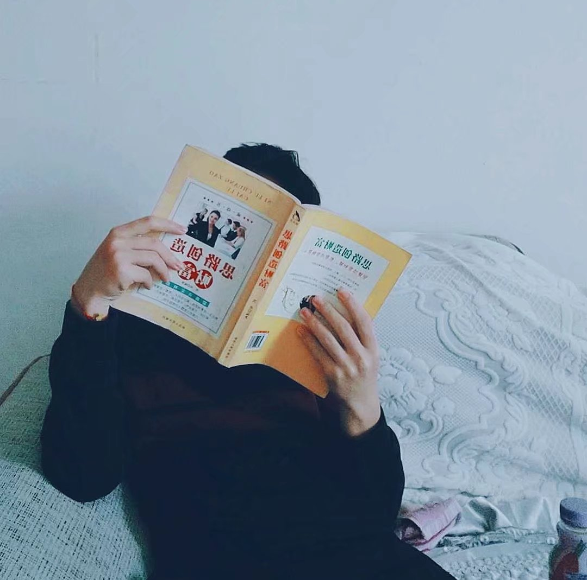

Yuyou'blog
首页
归档
标签
友链

Yuyou
永远热爱，永远热泪盈眶
100
10
100
40
文章
分类
标签
万字
分类
技术向
笔记本
创作集
自言语
分享
瞎捣鼓
10
10
10
19
30
12
标签
#macOS
#hush
#小米
#web前端
#鸿蒙OS
#PHP
#JavaScript
#windows xp
最近文章
2021-12-14
[译] 不，Web3 不是去中心化
2021-12-14
[译] 不，Web3 不是去中心化
2021-12-14
[译] 不，Web3 不是去中心化
2021-12-14
[译] 不，Web3 不是去中心化
归档
2022
2021
2020
2019
2018